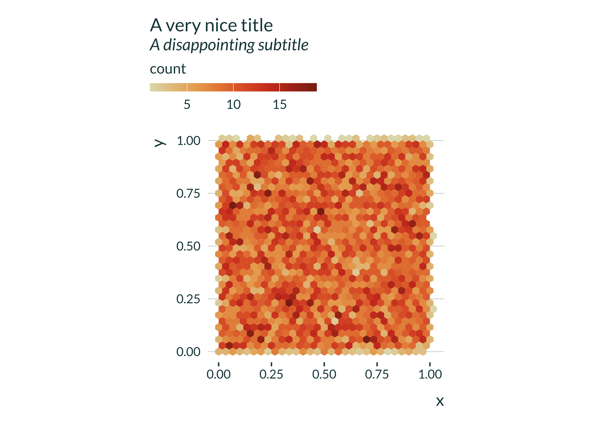
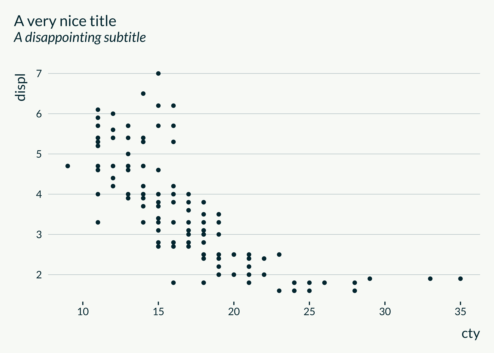

Main use
The easiest way to use this theme
The easiest way to use the mediocrethemes package is through the set_mediocre_all function. It enables to set both the theme and the color scale for all graphs in a document. The user can call this function at the beginning of the document. Subsequent plots can be created using the standard ggplot commands, no additional commands are required. The user does not need to add + theme_mediocre() or + scale_mediocre_d() to their plots to set the theme and the color, if they called set_mediocre_all() before. The following example illustrates this feature:
set_mediocre_all()
ggplot(data = ggplot2::mpg, aes(x = cty, y = displ, fill = manufacturer)) +
geom_col() +
labs(title = "A very nice title", subtitle = "A disappointing subtitle")
The function set_mediocre_all takes several arguments: pal, background, second_pair and gradient along with the usual base_size, base_family, base_line_size and base_rect_size. The following subsections describe the use of the three first arguments.
Changing the palette
Available palettes are: autumn, rainbow, green, hotcold, blackandwhite, coty. A palette defines the color of the theme and the color scale used in the graphs, ie the color of the axes and text for the theme and the colors used in the legend for the color scale. To change the palette to “coty” for instance, just set the argument pal equal to “coty” when calling the function set_mediocre_all at the beginning of the document. All subsequent graphs will be created using similar code, the only difference is the name of the palette in set_mediocre_all
set_mediocre_all(pal = "coty")
ggplot(data = ggplot2::mpg, aes(x = cty, y = displ, fill = manufacturer)) +
geom_col() +
labs(title = "A very nice title", subtitle = "A disappointing subtitle")
Here is a comparison of the different palettes:
#> [1] "set_mediocre_all(pal = 'autumn')"
#> [1] "set_mediocre_all(pal = 'rainbow')"
#> [1] "set_mediocre_all(pal = 'green')"
#> [1] "set_mediocre_all(pal = 'hotcold')"
#> [1] "set_mediocre_all(pal = 'blackandwhite')"
#> [1] "set_mediocre_all(pal = 'coty')"
Using a gradient palette
Each divergent palette (autumn, coty, rainbow and hotcold) can be turned into two gradient palettes. This is done by splitting a divergent palette in the middle, and use either the set of colors on the right or on the left (flipped to get light colors for small values). The example below hopefully clarifies this. To use these gradient palettes, one only needs to set the parameter gradient to “left” or “right”.
#> [1] "set_mediocre_all(pal = 'coty')"
#> [1] "set_mediocre_all(pal = 'coty', gradient = 'left')"
#> [1] "set_mediocre_all(pal = 'coty', gradient = 'right')"
Setting a background
Users can also easily set a background for all their plots by setting the parameter background to TRUE. The color of the background is predefined to fit nicely the theme palette. One can of course still modify the background color by adding a layer to the ggplot theme: theme(plot.background = element_rect(fill = "red")).
set_mediocre_all(background = TRUE)
ggplot(data = ggplot2::mpg, aes(x = cty, y = displ)) +
geom_point() +
labs(title = "A very nice title", subtitle = "A disappointing subtitle")
Using another pair of colors
Graphs with two categories, as the following one for instance, are ubiquitous.
set_mediocre_all()
ggplot(data = ggplot2::mpg, aes(x = drv)) +
geom_bar(aes(fill = factor(year)), position = "dodge") +
labs(title = "A very nice title", subtitle = "A disappointing subtitle")
In a same project, users may have to consider different sets of pairs. For instance, they may want to separate observations in years as in the previous graph and later use other categories such as Republicans and Democrats. User may not want to use the same color pair to denote year and party. For instance they may not want Republicans to be coded with the same color as the year 1999. To access a second color pair, users can therefore set the second_pair parameter of set_mediocre_all to TRUE and keep on writing standard ggplot code. Subsequent bi-color graphs will use a second pair of colors, different from the base one but still consistent with the color scale used.
set_mediocre_all(second_pair = TRUE)
ggplot(data = ggplot2::presidential, aes(x = party)) +
geom_bar(aes(fill = party), position = "dodge") +
labs(title = "A very nice title", subtitle = "A disappointing subtitle")